Actual gameplay captures. Each pair uses the same viewport and camera coordinates. Live traffic and animation continue between captures, so actor poses differ. No image generation was used on these screenshots.
Gameplay results · Building occlusion and directional diagnostics · Protected source hashes
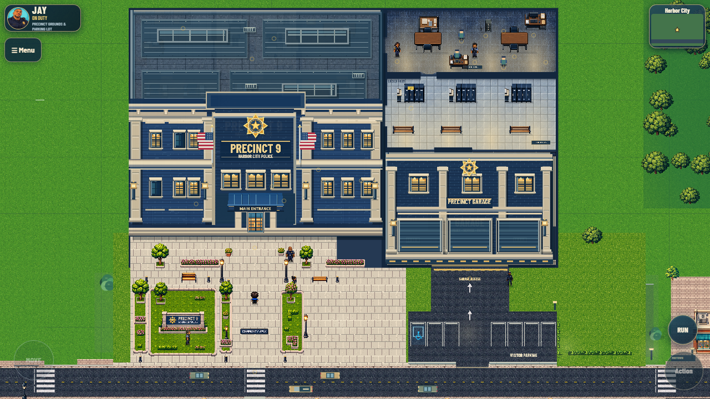
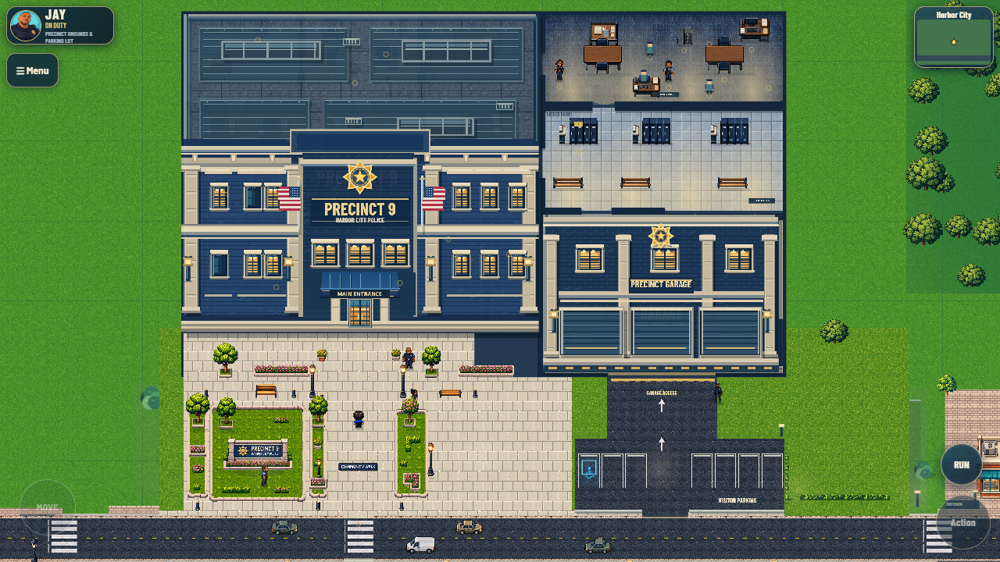
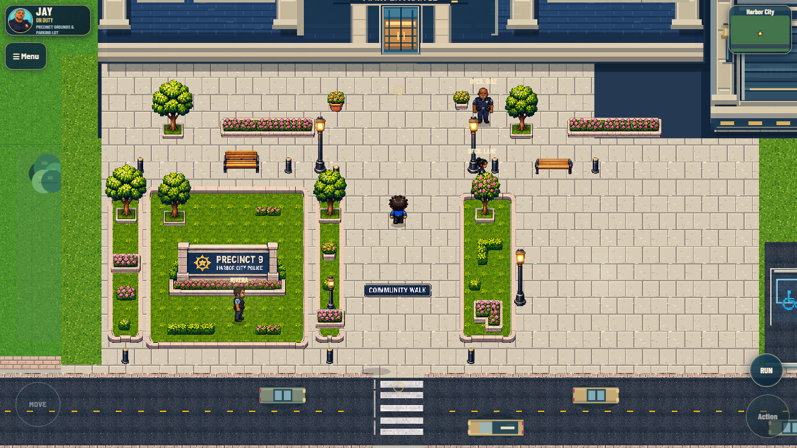
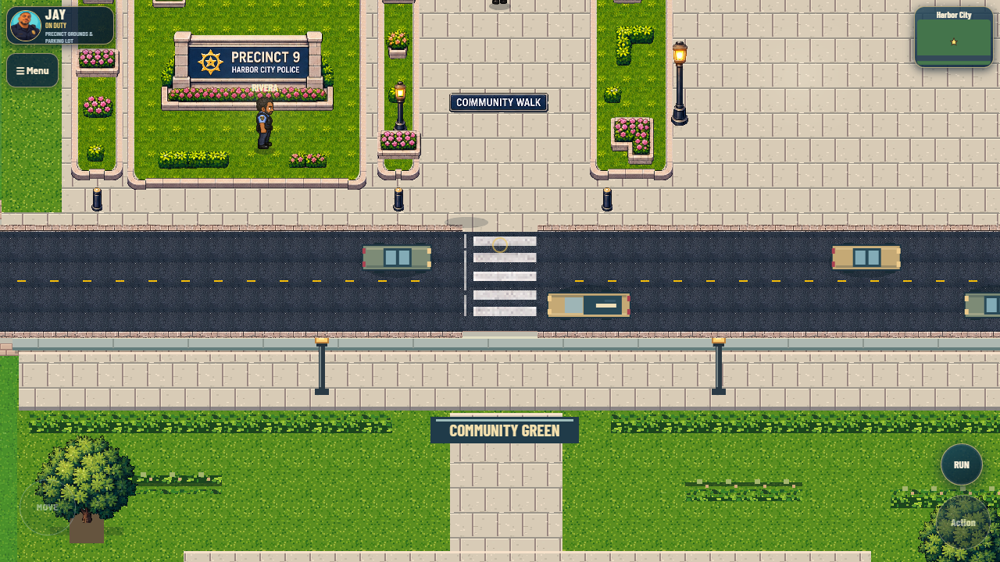
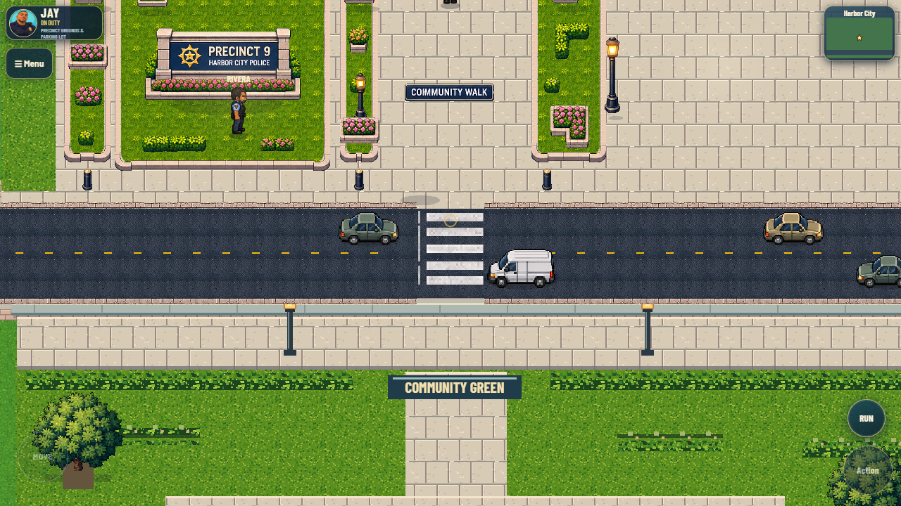
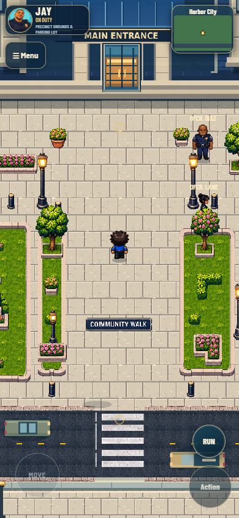
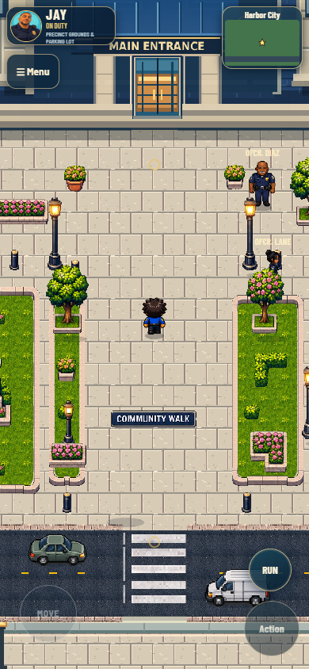
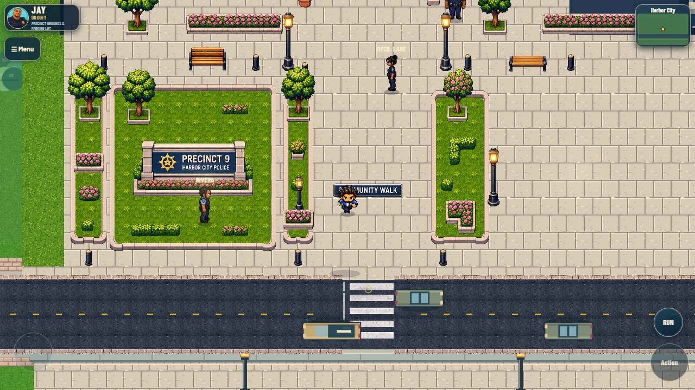
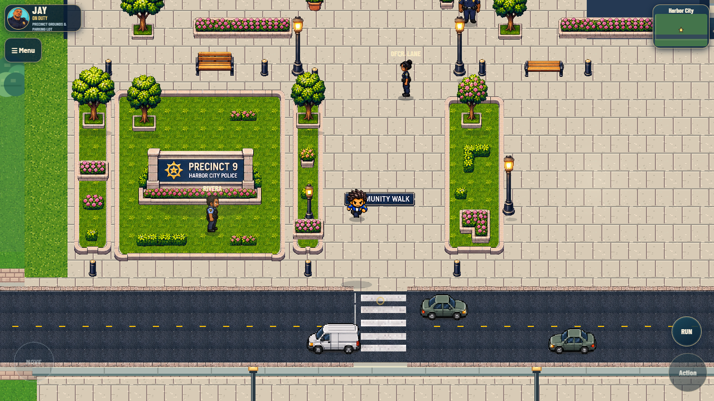
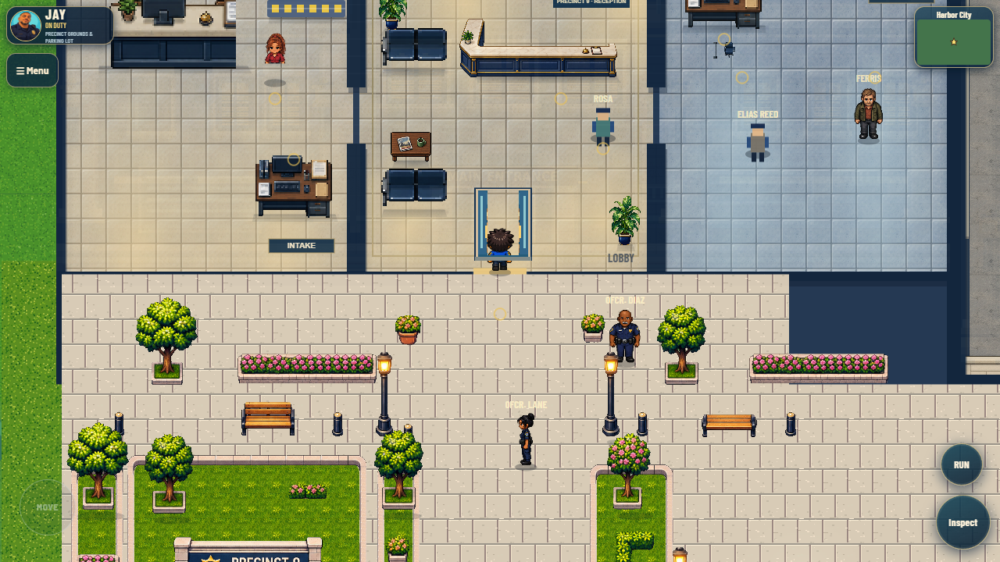
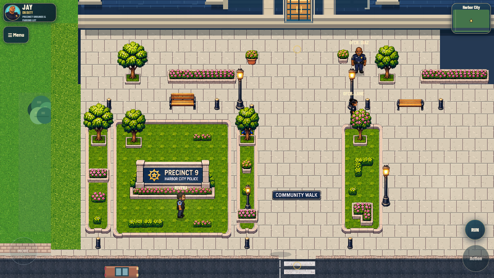
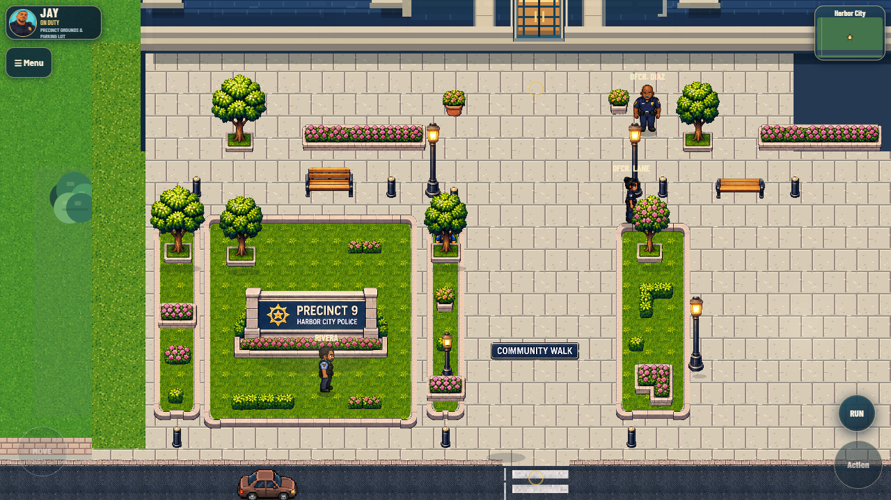
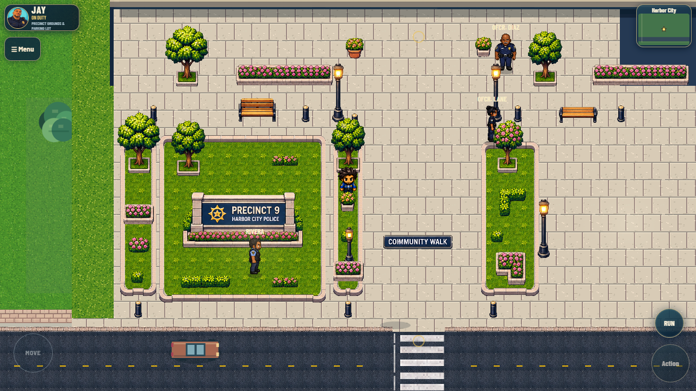
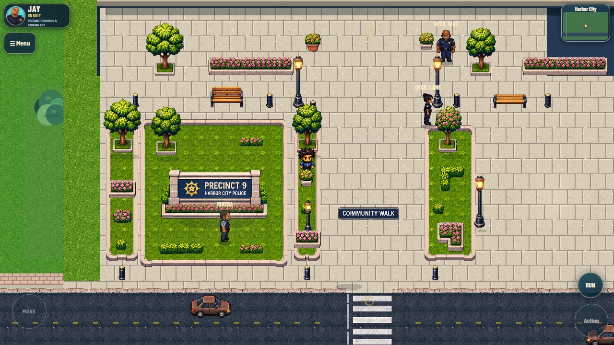
Automated desktop route, including initial QA camera placements; movement scenarios use real keys.